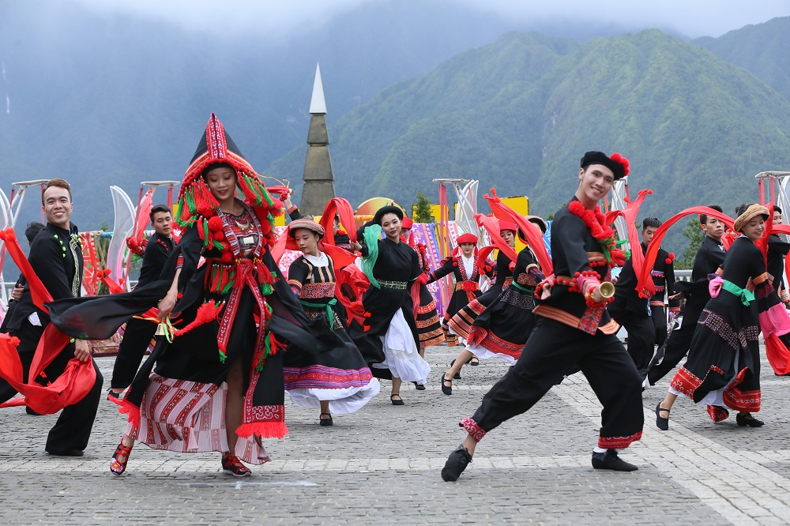
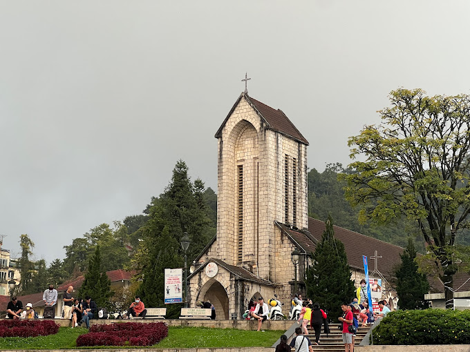
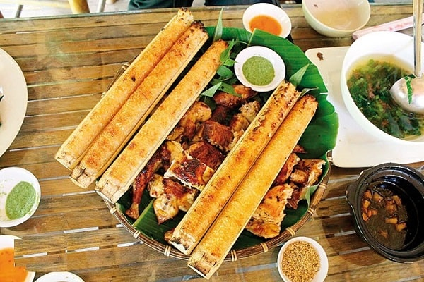
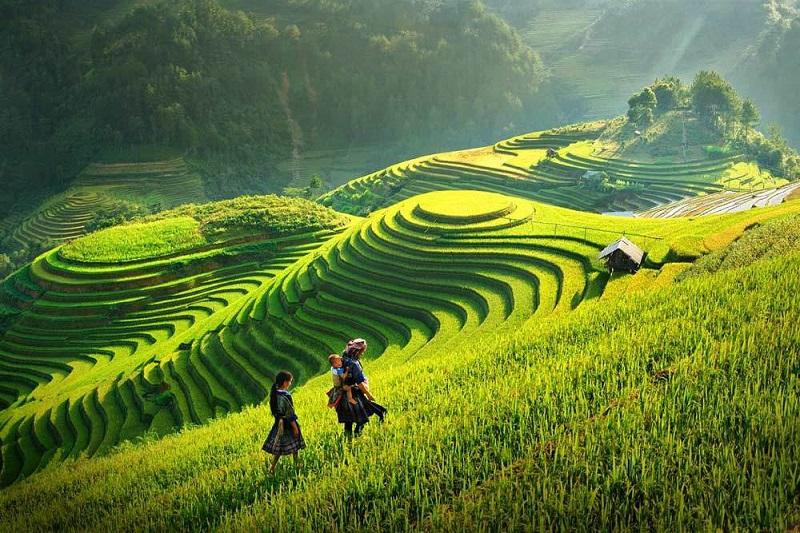
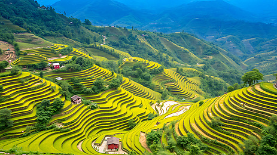

Du khách có thể chinh phục đỉnh Fansipan – “nóc nhà Đông Dương” bằng cáp treo hoặc trekking để trải nghiệm cảm giác chinh phục thiên nhiên.
Ngoài ra, hãy ghé thăm các bản làng như Cát Cát, Tả Van để tìm hiểu đời sống và văn hóa của các dân tộc thiểu số.
Chợ phiên Sa Pa là nơi giao lưu văn hóa độc đáo, bày bán nhiều sản phẩm thủ công và đặc sản địa phương.
Đừng quên thưởng thức các món ăn đặc trưng như thắng cố, lẩu cá hồi, đồ nướng trong tiết trời se lạnh.
Sa Pa là nơi sinh sống của nhiều dân tộc như H’Mông, Dao đỏ, Tày… mỗi dân tộc đều có nét văn hóa riêng biệt.
Trang phục truyền thống sặc sỡ, phong tục tập quán và lễ hội dân gian tạo nên bức tranh văn hóa đa dạng.
Những phiên chợ vùng cao không chỉ là nơi trao đổi hàng hóa mà còn là dịp gặp gỡ, giao lưu của người dân.
Dấu ấn kiến trúc Pháp cổ vẫn còn hiện diện qua một số công trình tại trung tâm thị trấn.
Sa Pa nổi tiếng với ruộng bậc thang uốn lượn, đặc biệt đẹp vào mùa lúa chín vàng rực.
Dãy núi Hoàng Liên Sơn hùng vĩ cùng đỉnh Fansipan tạo nên khung cảnh ngoạn mục và ấn tượng.
Sương mù bao phủ quanh năm mang đến vẻ đẹp huyền ảo, thơ mộng như chốn bồng lai.
Các thác nước như Thác Bạc, Thác Tình Yêu cũng là điểm đến hấp dẫn cho du khách yêu thiên nhiên.
Sa Pa có khí hậu mát mẻ quanh năm, mùa đông có thể rất lạnh và đôi khi xuất hiện băng tuyết.
Người dân nơi đây chân chất, thân thiện và giữ gìn nhiều nét văn hóa truyền thống độc đáo.
Sự hiếu khách và giản dị của họ mang lại cho du khách cảm giác gần gũi, ấm áp.
Hà Nội mang vẻ đẹp yên bình với những hồ nước như Hồ Gươm, Hồ Tây cùng hàng cây xanh rợp bóng.
Mỗi mùa Hà Nội lại có nét đặc trưng riêng, từ mùa hoa sữa nồng nàn đến mùa thu lá vàng lãng mạn.
Những con phố cổ kính, mái ngói rêu phong tạo nên khung cảnh rất riêng không nơi nào có được.
Buổi sáng sớm hay chiều tà là thời điểm lý tưởng để tận hưởng vẻ đẹp nhẹ nhàng của thành phố.
Hà Nội có bốn mùa rõ rệt: xuân ấm áp, hè nóng, thu mát mẻ và đông lạnh, mỗi mùa đều mang nét đặc trưng riêng.
Người Hà Nội nổi tiếng thanh lịch, thân thiện nhưng cũng rất tinh tế trong giao tiếp và sinh hoạt.
Nếp sống chậm rãi, nhẹ nhàng cùng sự hiếu khách sẽ khiến du khách cảm thấy gần gũi và dễ chịu.




